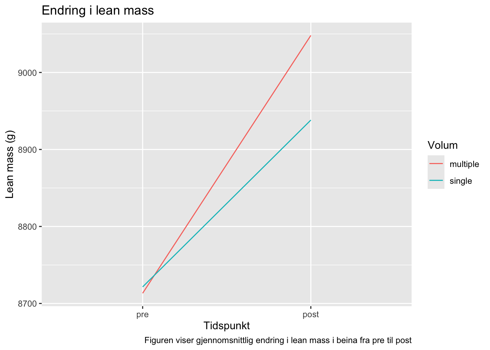
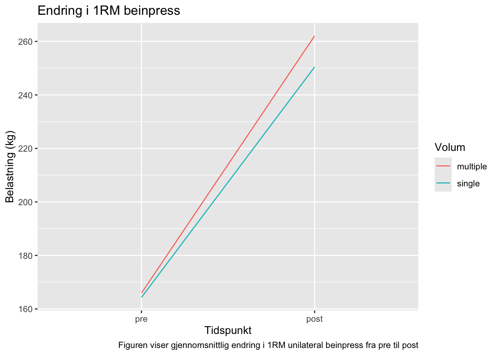

Styrketrening er ment som all trening som utvikler eller vedlikeholder vår evne til å skape størst mulig kraft ved en spesifikk eller forutbestemt hastighet, eller enkelt sagt øke eller vedlikeholde muskelmasse eller -styrke. Treningsformen består av sett bestående av x antall repitisjoner, som sammen med belastning og treningsfrekvens utgjør det totale treningsvolumet. I tillegg defineres treningsintensitet i styrketrening som en prosent av en repetisjon maksimum (%RM) eller repetisjoner i reserve. Resultatet man får av systematisk styrketrening er muskler som både blir større og sterkere. Årsaken til dette er at muskelfiberne øker i tverrsnitt (hypertrofi) grunnet fysiologiske adaptasjoner som skjer i muskulaturen knyttet til styrketrening. Hos utrente ser man typisk en økning i muskelfibertverrsnitt på ~0,1-0,5% per treningsøkt og en økning i muskelstyrke på ~1% per treningsøkt i de første 8-12 ukene av en styrketreningsintervensjon (Wernbom et al. 2007)
Hvilken treningsmetode som er mest optimal for å øke muskelmasse og -styrke er et omdiskutert og interessant tema. På lik linje med andre treningsformer vil den mest optimale metoden være individuelt og avhengig av den enkeltes utgangspunkt og mål med treningen. Mange opplever å ha stillesittende arbeid kombinert med lite tid til overs til trening, er ikke bra for helsa, og det er viktig at fysisk aktivitet i større grad prioriteres. Det er for mange med en travel hverdag viktig å finne den treningsformen som gir god effekt, samtidig som den er tidseffektiv. Studier viser at både muskelmasse og -styrke forfaller betrakdelig etter fylte 50 år (Deschenes, 2004; Janssen 2000), som utvikler seg til sarkopeni dersom man ikke påvirker prosessen ved å øke muskelproteinsyntesen. Sarkopeni er tap av muskelmasse som er aldersrelatert, som ofte begynner i 50-årene. Dette reduserer livskvaliteten og funksjonsevnen, samt øker risiko for sykdommer og tidlig død (Beaudart, 2017; Deschenes, 2004). Styrketrening er vist å ha god utvikling på både muskelstyrke og muskelmasse hos både menn og kvinner (Cureton et al. 1988).
Det er flere studier som har undersøkt hvilken forskjell ett sett og tre sett utgjør. Rhea og kolleger (2002) fant at tre sett ga signifikant større økning i styrke enn ett sett. Rønnestad og kolleger fant tilsvarende resultater, men også at tre sett ga bedre effekter på hypertrofi enn ett sett.
Med vissheten om denne kunnskapen er hensikten med denne studien å undersøke forskjellen, eventuelt hvor stor forskjellen er, på styrketrening med ett sett eller tre sett, på voksne kvinner og menns utvikling av styrke og muskelmasse.
5.1 Metode
5.2 Deltakerne
Det ble rekruttert 41 kvinner og menn med alder 18-40 år til å delta i studien. Deltakerne måtte være ikke-røykere, ikke ha trent mer enn en økt i uka de siste 12 månedene, ikke ha fysiske skader som hindret de i å gjennomføre treningen, ikke være allergisk mot bedøvelse, og heller ikke bruke medisiner som kunne påvirke treningsadapsjonene. Grunnet at deltakerne ikke hadde gjennomført mer enn 85% av øktene av ulike årsaker, ble syv deltakere ekskludert fra dataanalysene.
`summarise()` has grouped output by 'sex', 'include'. You can override using
the `.groups` argument.
Kvinner
Menn
Inkludert
Ekskludert
Inkludert
Ekskludert
Antall
18
4
16
3
Alder
22 (1.3)
22.9 (1.6)
23.6 (4.1)
24.3 (1.5)
Vekt (kg)
64.4 (10)
64.6 (9.7)
75.8 (11)
88.2 (22)
Hoyde (cm)
168 (6.9)
166 (7.6)
183 (5.9)
189 (4.6)
Verdiene er presentert som gjennomsnitt og standardavvik
5.3 Styrketrening
Treningsintervensjonen bestod av 12 uker styrketrening for hele kroppen med en belastning på 7-10 RM. Øvelsene på underkroppen ble utført unilateralt, altså at ett ben jobber om gangen, for å kunne gjøre within subject differensiering på treningsvolum. Hvilket ben som skulle ha ett sett, og hvilket som skulle ha tre sett, ble bestemt tilfeldig. Pre og post intervensjon ble muskelstyrke målt, samt ved uke 3, 5, og 9. Pre og post ble også kroppsammensetning målt.
5.4 Tester
Muskelstyrke ble målt som maksimal styrke, derav en repetisjon maksimum (1RM) i unilateral benpress. Testen hadde en standardisert oppvarming, som bestod av (estimert) 50, 75 og 85% av 1RM. Motstanden økte gradvis helt til deltakeren ikke klarte å gjennomføre en repetisjon, og fikk 4-6 forsøk. Den høyeste vekten deltakeren klarte ble deres 1RM. Kroppsammensetning ble målt med Dual Energy x-ray Absorptiometry (DXA) ved hjelp av en standardisert protokoll. Deltakerne kom fastende og hadde ikke gjennomført noe anstrengende aktivitet siste 48 timene.
5.5 Data
Det ble gjennomført en parret t-test på differansen mellom ett og tre sett på lean mass i bena, og på differansen mellom ett og tre sett på 1RM unilateral benpress. Figurene viser den gjennomsnittlige endringen fra pre til post i absolutte verdier for både ett og tre sett i lean mass og 1 RM i unilateralt beinpress. Data er analysert ved bruk av RStudio 2024.04.2.
library(ggplot2)lean.fig <- dxadata %>%select(participant:include, lean.left_leg, lean.right_leg) %>%pivot_longer(names_to ="leg", values_to ="lean.mass", cols = lean.left_leg:lean.right_leg) %>%mutate(leg =if_else(leg =="lean.left_leg", "L", "R"), sets =if_else(multiple == leg, "multiple", "single")) %>%select(participant, time, sex, include, sets, leg, lean.mass) %>%filter(time %in%c("pre", "post")) %>%group_by(time, sets) %>%summarise(m =mean(lean.mass), .groups ="drop") %>%mutate(time =factor(time, levels =c("pre", "post"))) %>%ggplot(aes(time, m, color = sets, group = sets)) +geom_line() +labs(x="Tidspunkt",y ="Lean mass (g)",colour ="Volum",title ="Endring i lean mass",caption ="Figuren viser gjennomsnittlig endring i lean mass i beina fra pre til post")lean.fig

Resultatene fra den parrede t-testen viser at et er en signifikant forskjell mellom ett og tre sett på lean mass i bena med en p-verdi på 0.036. Figuren viser at begge bena hadde tilnærmet likt utgangspunkt ved pre-test. Begge bena har hatt fremgang, men tre sett har en større økning enn ett sett.
#| label: strength.fig#| echo: false#| message: falsestr.fig <- strengthvolume %>%filter(time %in%c("pre", "post"), exercise =="legpress",!is.na(load)) %>%group_by(time, sets) %>%summarise(m =mean(load)) %>%mutate(time =factor(time, levels =c("pre", "post"))) %>%ggplot(aes(x = time, y = m,color = sets, group = sets)) +geom_line() +labs(x ="Tidspunkt",y ="Belastning (kg)",color ="Volum",title ="Endring i 1RM beinpress",caption ="Figuren viser gjennomsnittlig endring i 1RM unilateral beinpress fra pre til post")
`summarise()` has grouped output by 'time'. You can override using the
`.groups` argument.
str.fig

Resultatene fra den parrede t-testen viser at det er en signifikant forskjell mellom ett og tre sett på maskimal styrke i unilateral benpress med p-verdi på 0,025. Figuren viste at begge bena var tilnærmet like sterke ved pre-test. Begge bena hadde fremgang, men tre sett hadde en større økning i maksimal styrke enn ett sett.
5.6 Diskusjon
I denne studien ble det undersøkt forskjellen mellom ett sett og tre sett i styrketrening utgjorde på muskelmasse og maksimal styrke i bena hos 34 voksne kvinner og menn, besvart med at tre sett ga en større økning i maksimal styrke og muskelmasse. Resultatene viste at benet som trente tre sett hadde en signifikant større endring i maksimal styrke i unilateral benpress og lean mass enn benet som trente ett sett. Resultatene stemmer overens med Krieger (2010) og Krieger (2009) som også fant at styrketrening med moderat volum ga bedre effekt på muskelmasse og -styrke enn styrketrening med lavt volum. De fysiologiske prosessene som foregår i kroppen når man trener styrke ser ut til å bli påvirket av mer enn bare styrketreningen man gjør, men også av treningsvolumet, der et høyere volum er å foretrekke fremfor et lavere volum (Schoenfeld et al., 2016).
5.7 Konklusjon
Til tross for dette hadde også benet som kun trente ett sett, god fremgang i både maksimal styrke og muskelmasse. Det er altså ikke bortkastet å kun trene ett sett, men det er bedre å trene tre sett enn ett sett.
Referanser:
Beaudart, C., Zaaria, M., Pasleau, F., Reginster, J. Y., & Bruyère, O. (2017). Health Outcomes of Sarcopenia: A Systematic Review and Meta-Analysis. PloS one, 12(1), e0169548. https://doi.org/10.1371/journal.pone.0169548
Cureton KJ, Collins MA, Hill DW, McElhannon FM Jr. Muscle hypertrophy in men and women. Medicine and Science in Sports and Exercise. 1988 Aug;20(4):338-344. DOI: 10.1249/00005768-198808000-00003. PMID: 3173042.
Deschenes M. R. (2004). Effects of aging on muscle fibre type and size. Sports medicine (Auckland, N.Z.), 34(12), 809–824. https://doi.org/10.2165/00007256-200434120-00002
Krieger J. W. (2010). Single vs. multiple sets of resistance exercise for muscle hypertrophy: a meta-analysis. Journal of strength and conditioning research, 24(4), 1150–1159. https://doi.org/10.1519/JSC.0b013e3181d4d436
Krieger J. W. (2009). Single versus multiple sets of resistance exercise: a meta-regression. Journal of strength and conditioning research, 23(6), 1890–1901. https://doi.org/10.1519/JSC.0b013e3181b370be
Janssen, I., Heymsfield, S. B., Wang, Z. M., & Ross, R. (2000). Skeletal muscle mass and distribution in 468 men and women aged 18-88 yr. Journal of applied physiology (Bethesda, Md. : 1985), 89(1), 81–88. https://doi.org/10.1152/jappl.2000.89.1.81
Rhea, M. R., Alvar, B. A., Ball, S. D., & Burkett, L. N. (2002). Three sets of weight training superior to 1 set with equal intensity for eliciting strength. Journal of strength and conditioning research, 16(4), 525–529.
Rønnestad, B. R., Egeland, W., Kvamme, N. H., Refsnes, P. E., Kadi, F., & Raastad, T. (2007). Dissimilar effects of one- and three-set strength training on strength and muscle mass gains in upper and lower body in untrained subjects. Journal of strength and conditioning research, 21(1), 157–163. https://doi.org/10.1519/00124278-200702000-00028
Schoenfeld, B. J., Ogborn, D., & Krieger, J. W. (2016). Effects of Resistance Training Frequency on Measures of Muscle Hypertrophy: A Systematic Review and Meta-Analysis. Sports medicine (Auckland, N.Z.), 46(11), 1689–1697. https://doi.org/10.1007/s40279-016-0543-8
Wernbom, M., Augustsson, J. & Thomeé, R. The Influence of Frequency, Intensity, Volume and Mode of Strength Training on Whole Muscle Cross-Sectional Area in Humans. Sports Med37, 225–264 (2007). https://doi.org/10.2165/00007256-200737030-00004